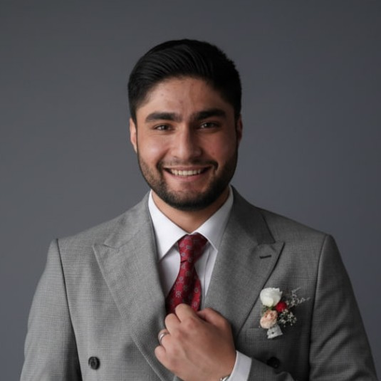

Mohammadali Javadinasab
AI Researcher · Electrical Engineer (Signal Processing) · Co-founder of LearnAmuse
M.Sc. student in Electrical Engineering (Signal Processing) at Shahid Beheshti University and B.Sc. graduate from Iran University of Science & Technology. Specializing in EEG source localization, brain-computer interfaces (BCI), deep learning architectures for neuroimaging, and reinforcement learning.
Core Focus
Research Interests & Publications
Intersecting biomedical signal processing, deep neural networks, and neurocomputational modeling.
Biomedical Signal Processing
EEG & speech signal processing, artifact removal, biological wave filtering, and bio-electromagnetics simulation.
Deep Learning & RL
Geometric deep learning on 3D manifolds, reinforcement learning, federated learning, and computer vision architectures.
Neuroscience & BCI
Brain-Computer Interfaces, neuroimaging, neuroengineering, neurofeedback protocols, and cortical dipole dynamics.
Industrial AI & Decision Making
Multi-Attribute Decision Making (MADM: MAIRCA, TOPSIS, PROMETHEE, ELECTRE), supply chain automation, and operations research.
EEG Source Localization Using Deep Learning
Proposed a novel deep learning architecture using 3D input and output representations to improve the spatial accuracy of identifying neural sources from scalp EEG recordings, with source modeling based on 3D spherical and ellipsoidal shapes.
Academic Path
Education
Formal training in signal processing, telecommunications, and industrial systems engineering.
M.Sc. in Electrical Engineering — Signal Processing
Advanced research focusing on neural signal analysis, higher-order statistical processing, and bio-electromagnetic wave propagation.
B.Sc. in Electrical Engineering — Telecommunications (Major's Degree)
Thesis: Simulating brain neural activities using head model & retrieving activities using Deep Learning (EEG Inverse Problem). Supervisors: Dr. Ehsan Darestani, Dr. Ali Abdolali.
B.Sc. in Industrial Engineering (Minor's Degree)
Focus on Multi-Attribute Decision Making (MADM), Project Management, Operations Research, and Financial Engineering.
High School Diploma in Mathematics and Physics
Extracurricular: Designed, developed & implemented a GUI application & 5 PCBs for a smart home system using Raspberry Pi 3, NodeMCU ESP8266 (IoT), GSM, Telegram's bot, and PyQt.
Professional Journey
Experience & Research Roles
Full-time academic research, freelance data science, and entrepreneurial education technology.
Research & Teaching Assistant
- EEG Source Localization Using Deep Learning: Working under Professor Dr. Ehsan Darestani on 3D convolutional architectures for cortical dipole retrieval (Fall 2022 — Present).
- Linear Algebra Teaching Assistant: Instructor: Dr. Saeed Ebadollahi (Fall 2023).
AI & Data Science Specialist
- Colon Polyp Detection Hackathon (IUST & Irancell Labs 2025): Developed ML model achieving 95% accuracy in detecting large intestine polyps; integrated with a conversational chatbot interface.
- Federated Learning with RL: Optimized topology of imaging satellites using Federated Learning and Reinforcement Learning (Australia).
- Skin Cancer Classification: Trained Deep Learning model using Transfer Learning (InceptionV3), achieving 95% accuracy.
- CIFAR-10 Image Classification: Developed a Deep CNN for CIFAR-10 image classification.
- GUI for Sigploit: Developed a graphical user interface for the Sigploit security testing framework.
- Amazon Sales KPI Analysis: Analyzed sales data to extract key performance indicators.
- MADM Framework: Implemented MAIRCA, TOPSIS, PROMETHEE II, and ELECTRE II ranking methods in Python.
Co-founder & Web Developer
- Web Application Development: Designed, built, and launched LearnAmuse.com.
- AI Educator Training: Developed and delivered AI integration courses for teachers across Tehran schools.
Instructor & Coach
- STEM Instructor (Nikan & Solaha High Schools): Taught Deep Learning, Python, and Electronics to high school students.
- English Language Teacher (PepTalk Academy): Taught English to diverse student groups online.
- Volleyball Coach: Coached high school volleyball teams focusing on skills and teamwork.
R&D Engineer & Course Instructor
- R&D Engineer: Built event generation system using NVIDIA Jetson Nano and DeepStream SDK.
- Course Instructor: Taught Neural Networks & Deep Learning curricula to 35+ enrolled students.
Python Developer & Data Scientist
- Jobmetric Project: Built backend using Flask, Elasticsearch, and MongoDB; applied k-NN clustering for LinkedIn profiles.
- Boursimeh Project: Developed RNN-based stock market signal prediction with sentiment analysis.
- Tenshi-bot Project: Built multi-threaded GUI and Telegram automated bots for inventory management.
Engineering & Code
Selected Projects
End-to-end implementations spanning speech recognition, electromagnetic field calculations, and IoT.
Smart Home Voice Assistant 'Syntax'
Trained a Deep RNN to activate when the word 'Syntax' is spoken, achieving a validation accuracy of 99.59% & a validation loss of 0.058. Designed Windows desktop application listening to Persian automation commands.
Field & Flux 3D Simulator
Designed a desktop application that calculates the electric field & flux of given electrical point charges. Implemented interactive 3D plotting for arbitrary point charges and electric field vector lines.
IoT Smart Home with 7-Inch GUI & Telegram
Implemented a local smart home controlled by SMS and Telegram bot with garden smart watering. Designed and developed a 7-inch touch screen GUI with ESP8266 controllers for stair lighting via PIR sensors.
RoboCupJunior Junior Soccer PCB
Designed, printed, and fabricated the custom PCB for the RoboCupJunior autonomous soccer competition. Placed first in high school division.
Achievements
Honors & Awards
5th Place — Decode Cup Competition
Attained 5th place out of 20 teams in Decode Cup competition in a team of four (2023).
Head of 7 — IEEE SPS 2022 Signal Processing Cup
Trained & developed a Deep CNN for synthetic speech detection as Head of a team of 7 competing in the IEEE Signal Processing Society's 2022 SP Cup (2022).
1st Place — Huawei Seeds for the Future
1st Team at Huawei's Seeds For The Future Program in 5G, Cloud, and AI (August 2022).
Top 1% Nationwide University Entrance Exam
Ranked within Top 1% among >150,000 participants in nationwide university entrance exam in mathematics & physics for B.Sc. (2019).
1st Team & Best Outside Hitter
Graduates Nikan High School volleyball tournament championship & individual MVP accolade (2021).
Arsenal
Technical Skills & Competencies
Credentials
Certifications & Workshops
- Practical Workshop on QEEG & EEG (16 Hours, May 2024): Positive Belief Psychology Center & IPM & SCS.
- A Journey to the Wonderful World of the Brain (Summer 2023): Neuroanatomy, Neurophysiology, Psychiatric & Neurological Disorders — National Brain Mapping Laboratory (NBML).
- AI on Jetson Nano & Building Video AI Applications at the Edge (Mar 2023): NVIDIA.
- Deep Learning Specialization, Recommenders, RL, CNNs in TensorFlow, NLP in TensorFlow, Understanding Deepfakes: Coursera.
- Seeds for the Future Program (5G, AI & Cloud, August 2022): Huawei.
- 7th Iranian Congress on Brain Mapping (ICBM, 16h, Jul 2023): National Brain Mapping Laboratory (NBML).
- 5th Sharif Neuroscience Symposium (In-person, Mar 2023): Sharif University (in collaboration with IPM).
- SoloLearn: Python Core, Python Data Structures, Data Science.
- SharifStar: Professional Communications (Body language, Presentation skills).
- DecodeCup (May 2023) & DL in Machine Vision Workshop: Computeronic & IUST.
Volunteer Leadership
Member of Students' Scientific Association, Electrical Engineering School in IUST (Tehran, Iran): Organizer of series of university events on Artificial Intelligence applications (AI4U) & Lead Poster Designer of the Association (Jan 2021 — 2022).
Languages
- Persian: Native Proficiency
- English: Upper-Intermediate (TOEFL - 11 Nov 2023: 78, Registered new exam: 20 May 2026)
Endorsements